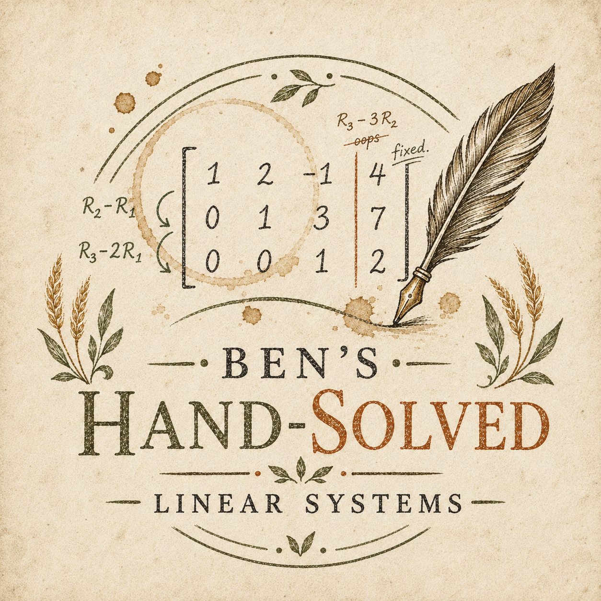

Basic
Gaussian Elimination
The classic base package: row-reduction performed lovingly, with each pivot given the dignity it deserves.
- Step-by-step row operations
- Reduced or echelon form
- Optional commentary in the margins

Ben’s Hand-Solved Linear SystemsLocally sourced pivots • Free-range row operations
We bring mathematics back from black boxes and into the hands of mathematicians. Send us your system; we’ll solve it using Gaussian elimination, LU factorization, QR decomposition, or — for the brave — Cramer’s rule.
*We do permit calculators to feel appreciated from a distance.
The classic base package: row-reduction performed lovingly, with each pivot given the dignity it deserves.
For clients who want structure, elegance, and the faint smell of chalk dust in the factorization.
An artisanal luxury product. Impractical, dramatic, and priced accordingly.
Prices scale with the number of equations, variables, method complexity, and density. If your matrix has a lot of zeros, congratulations: your thrift has been noticed.
base + size × method × medium − sparsity discount
Estimates are binding only after the mathematician has stared at the matrix in silence.
Includes a tasteful coffee ring and one crossed-out false start.
Hagaromo chalk, soft eraser ghosts, and a photo-ready final tableau.
For clients seeking old-world determinant energy.
Add commentary such as “nice pivot,” “ominous zero,” or “Ben was here.”
“I sent Ben a sparse 9×9 system and received back a beautifully annotated echelon form with a coffee stain over the third pivot. I wept.”
— A satisfied numerical analyst
A proudly overqualified cooperative of pencil-forward linear system artisans.
CEO — Chief Elimination Officer
Benjamin wakes each morning before sunrise, grinds his own coffee, sharpens exactly three pencils, and asks the universe whether today is a pivotal day. His vision for the company is simple: every matrix deserves to be row-reduced by someone wearing linen.
CTO — Chief Theorem Officer
Joseph oversees our proprietary hand-solving stack, including chalk selection, napkin-based prototyping, and the sacred migration from “I think this works” to “the arithmetic has been checked twice.” He believes every linear system has a story, and most of them involve subtracting row two from row five.
COO — Chief Operations Operator
Liam ensures that every order moves smoothly from artisanal intake to final boxed solution. Whether coordinating chalkboard availability or verifying that each coefficient has been ethically sourced, he brings operational rigor to the ancient craft of writing numbers beneath other numbers.
The idea for Ben’s Hand-Solved Linear Systems was born, as all serious mathematical ventures are, at a reclaimed wooden table covered in coffee rings, loose chalk dust, and one suspiciously large augmented matrix. Ben, Joseph, and Liam had gathered for what was supposed to be a quiet afternoon of “just checking one computation.” Four hours later, the table was buried beneath crumpled scratch paper, the espresso machine had entered its Jordan normal form, and someone had whispered the words that would change the future of linear algebra forever: “What if people paid us to do this by hand?”
At first, the room fell silent. Not because the idea was absurd, but because each member of the team was independently verifying that silence was in the nullspace of excitement. Then Ben stood up, pointed at a half-reduced matrix, and declared that the world had suffered long enough under the cold tyranny of instant answers. “No more,” he said, dramatically underlining a pivot. “The people deserve locally sourced row operations.”
Joseph immediately began drafting the technical roadmap on the back of a seed packet. Phase one: accept linear systems from the public. Phase two: solve them using ethically sharpened pencils, small-batch chalk, and, where appropriate, feather quills. Phase three: return each solution with the warmth and texture of a proof that has known sunlight. Liam, already thinking operationally, asked the crucial question: “Can we scale?” After a long pause, everyone agreed that scaling was acceptable, provided it was done only by nonzero constants.
And so a company was formed. Not a startup, exactly. More of a start-up-to-row- echelon-form. A farm-to-tableau movement. A cooperative of coefficient caretakers. A place where every unknown is treated as known-in-progress, every equation is given room to breathe, and every matrix is gently encouraged to become its best triangular self.
Our philosophy is simple: solving a linear system should feel less like pressing a button and more like kneading bread. You begin with something messy and slightly sticky. You add structure. You work it patiently. You let the pivots rise. Eventually, if the arithmetic gods are kind and nobody divided by zero behind the barn, a solution emerges. Maybe unique. Maybe infinite. Maybe inconsistent, but in a way that feels honest.
We believe in slow math. Seasonal math. Math with fingerprints on it. When a system arrives at our workshop, we do not simply “process” it. We greet it. We ask about its day. We inspect its sparsity profile, admire its coefficients, and decide whether it belongs on chalkboard, papyrus, legal pad, butcher paper, or the back of an envelope found in a tweed jacket. Dense systems are handled with solemnity. Sparse systems are given a discount and a small thank-you note for respecting our time.
Every solution passes through our rigorous pasture-raised quality pipeline. First, Ben checks the strategic vision: are the pivots bold, courageous, and aligned with the brand? Next, Joseph audits the mathematics, ensuring that no rogue minus sign has wandered off into the woods. Finally, Liam oversees fulfillment, packaging, and the sacred final inspection: holding the page up to the light and saying, “Yes. This has been solved by a human.”
Some companies chase disruption. We chase substitution. Others optimize for speed; we optimize for the satisfying moment when a row of fractions finally cancels. Where the modern world sees a matrix, we see a field of possibility: rows ready to be harvested, columns standing tall, constants waiting patiently at the edge of the augmented fence.
We are not anti-technology. We love technology. We simply believe that sometimes technology should step aside, pour itself a cup of chicory coffee, and watch a mathematician do Gaussian elimination with the quiet confidence of someone who has made peace with fractions.
That is our vision: to restore dignity to the unknowns, romance to row reduction, and a little artisanal crunch to computational linear algebra. Whether your system is two equations scribbled on a napkin or a sprawling coefficient meadow in need of careful cultivation, Ben’s Hand-Solved Linear Systems is here to help.
Bring us your tired matrices, your poor pivots, your huddled variables yearning to be free. We will reduce them — gently, by hand, and with tremendous enthusiasm.
Yes. Every row operation is performed by a human mathematician with a writing implement, a surface, and an emotionally complex relationship to arithmetic.
Absolutely. Choose plain paper, Hagaromo chalkboard, papyrus quill, café notebook, or another sensible artisanal surface. Unusual substrates may require a consultation.
They do. Zeros are nature’s coupons. The more empty your matrix feels, the more forgiving our estimate becomes.
We still solve it. Inconsistency and free variables will be clearly marked, annotated, and treated with the dignity expected of all mathematical outcomes.
Technically yes, spiritually no. We reserve the right to recommend a less theatrical method before anyone starts expanding a 9×9 determinant by hand.
Not intentionally. Almost certainly.
To request a solve, please use the form to the right. For any other questions or concerns, please reach out to our illustrious, chalk-covered team at benshandsolvedsystems@proton.me.